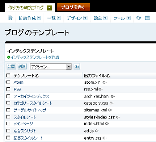
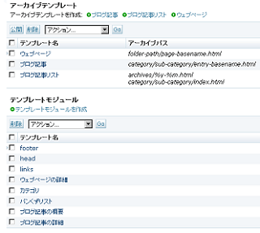

MovableTypeのデフォルトテンプレートについて
MovableTypeでブログを作成すれば詳細なカスタマイズができるので、自分の思うとおりに作ることができます。けれども、最初のテンプレートの設定自体はかなり難しいです。
MovableTypeに付属のデフォルトのテンプレートで作成している人も多いですが、不必要なdivが多数生成されてしまい、SEO対策的にどうなのだろうという気もしますし、構成がかなり複雑になってしまいますので、私はとりあえずデフォルトのものは削除して利用することが多いです。
個人的な印象では、デフォルトのテンプレートでは、スタイルシート、HTMLともに、カスタマイズしにくい面があるような気がします。
この原因として、ひとつのテンプレートで２カラムや３カラムなどに対応しているため、必要のないCSSまで設定されていることが理由と思います。また、使用していないモジュールであっても設定されており、煩雑になってしまっている印象があります。海外CMSのため、フォントなども欧文用に最適化されている側面があり、リセットCSSという手法がとられている点も複雑化している要因となっているのかもしれません。
ひとつのCSSで全てのニーズに対応するには、外部CSSを複数に切り分けてインポートする形が便利なのでしょうけど、一般的には一枚のCSSでそのまま表示されるのが一番いいのではないでしょうか。
そんなわけで、とりあえず、デフォルトのスタイルシートはある程度は削除してから、１から作成するようにしている次第です。ついでに、カテゴリ用やアーカイブ用でスタイルシートはわけたりもしてカスタマイズしています。

テンプレートモジュールはこんな感じで作ってます。

デフォルトの場合、「/12/01/example.html」などのように日付でURLが作成されてしまいますが、「/カテゴリ名/example.html」のような形の方が検索エンジンフレンドリーなURLとなり、SEO対策上のメリットがあると思います。
「テンプレートモジュール」と「ウィジット」の違いはよくわからないのですが、中くらいの部品と小さい部品のような違いなのかなと思ってます。つまり、「大 - 中 - 小」のような形での構成になっているかと思いますが、私の場合は「大」ひとつで対応するような形がシンプルと思います。
カスタマイズしようと「大」を調べてみると、それは「中」に書いてあるといわれ、「中」の箇所をチェックしてみると「小」を調べてみてくれと言われる感じなので、大規模サイトでもない限り、「大」ひとつで統一してしまってもかまわないと思います。
Movable Type のデフォルトテンプレートではけっこう複雑なんで、いったんシンプルな形で作成しなおしてから、徐々に複雑化していくのがよいかもしれません。